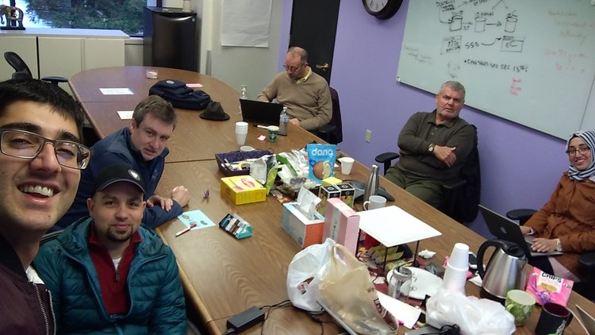
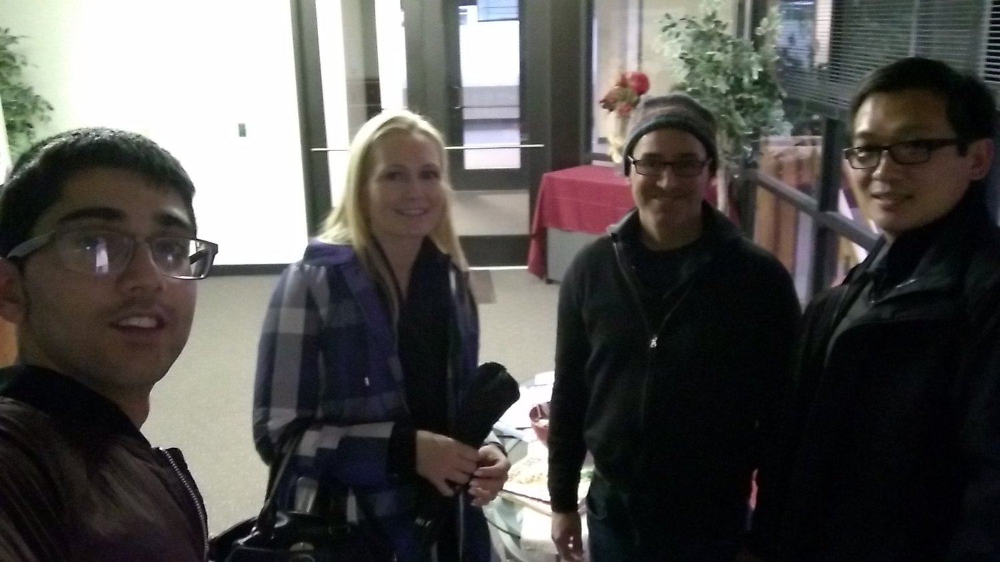
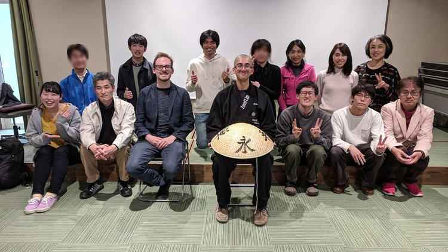

ZENIT ARCHIVE
Successful ZenIT Planning Workshop!
Jan 16, 2019
Here’s to a successful business planning workshop for ZenIT, in the Silicon Valley (original event page). Thanks to all twenty-three participants for their feedback, ideas, and collaboration. ZenIT’s core team has clearly defined the next steps, which include establishing our base in the Silicon Valley… stay tuned!
Post not marked as liked
Recent Posts
See All
2019/12/15 ZenIT Workshop @ Tenryuuji - Blog Post
27
0
Post not marked as liked
2019/04/14 ZenIT Workshop @ Eiheiji - Blog Post
27
0
Post not marked as liked
University of Fukui Students Learn About the Silicon Valley and ZenIT
10
0
Post not marked as liked




